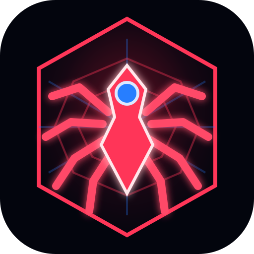

JARVIS // DESKTOP CORE
Preparando el enlace privado
Comprobando el núcleo de Jarvis…
Tus cuentas, memoria y conexiones permanecen en el servicio local existente.

JARVIS // DESKTOP CORE
Comprobando el núcleo de Jarvis…
Tus cuentas, memoria y conexiones permanecen en el servicio local existente.